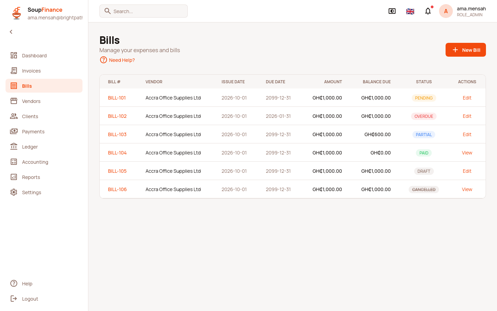
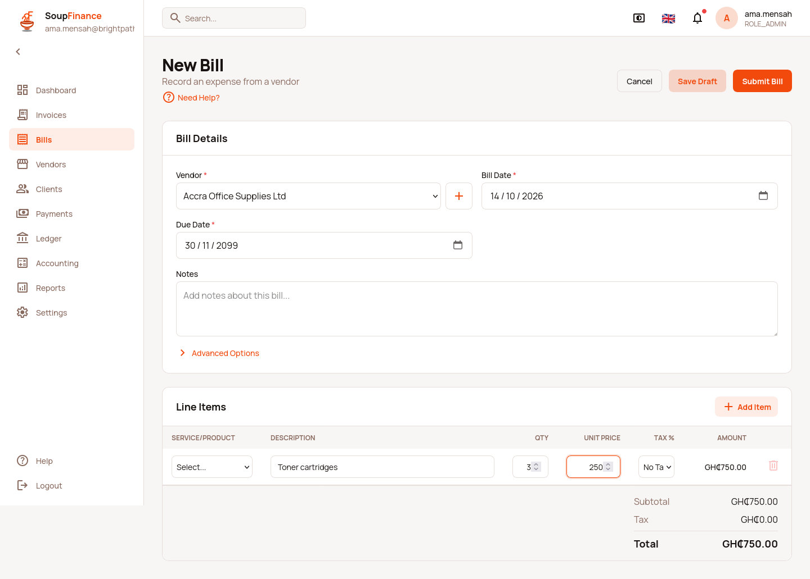
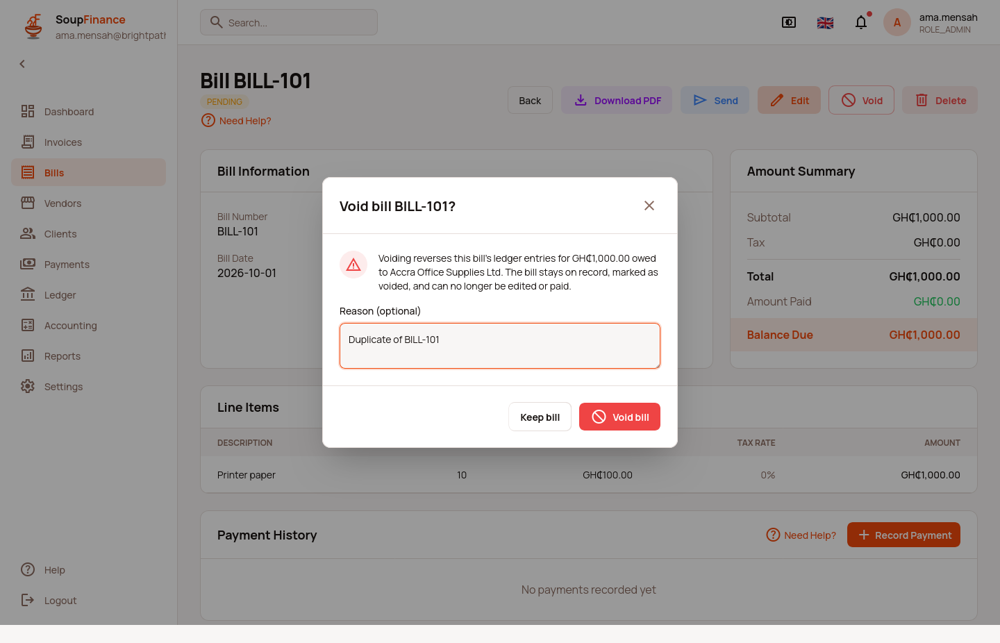
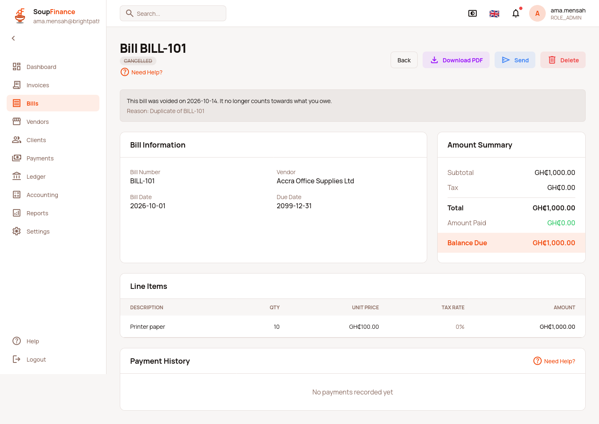
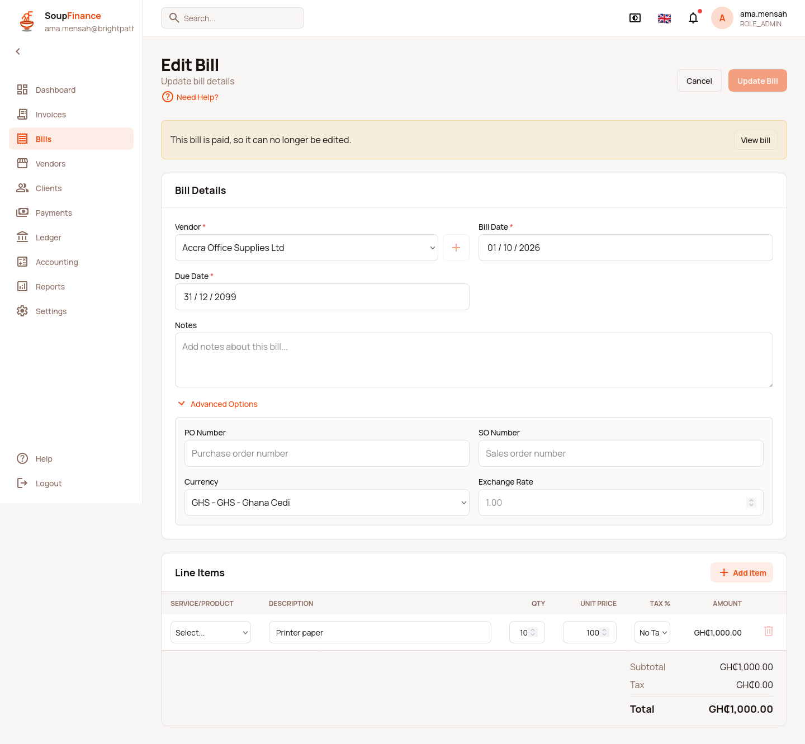

SOUPFIN-184 — Bill lifecycle
Save draft, Submit, Void. Frontend shipped; backend actions planned for soupmarkets-web. Written 2026-10-14.
1. What the backend does today
Checked on the LXC backend on 2026-10-14, and in soupbroker/finance/Bill.groovy.
Bill.statusis aPaymentStatus. The backend derives it from payments ingetCheckStatus()and marks itbindable:false, so a client cannot set it. The first 100 bills on LXC read: 66null, 32PENDING, 2PARTIAL.index.jsonleaves out paid bills.- There is no draft or cancelled state. Every bill posts to the ledger when it is saved, through
BillItemLedgerTransactionListenerServiceandTaxEntryBillItemLedgerTransactionListenerService. - OVERDUE is not stored anywhere. It means an unpaid balance past its due date.
POST /rest/bill/saveDraft.json,/submit/{id}.jsonand/cancel/{id}.jsonall return a Tomcat HTML 404 page.
2. The lifecycle
| Shown | Comes from | Edit | Void | Pay |
|---|---|---|---|---|
| DRAFT | postingStatus = DRAFT | Yes | No (delete it instead) | No |
| PENDING / PARTIAL | status (null is derived the backend's way) | Yes | Only with no payments | Yes |
| OVERDUE | balance > 0 and due date before today | Yes | Only with no payments | Yes |
| PAID | status = PAID | No | No | No |
| CANCELLED | postingStatus = CANCELLED | No | No | No |
All of this lives in soupfinance-web/src/features/bills/billStatus.ts. Every page reads it, so
the list, detail page, form, PDF and Pay Bills cannot disagree.
3. Frontend — done done
| Story | What changed |
|---|---|
| F1 | billStatus.ts; list, detail, PDF template and listOpenBillsForVendor use it. An unknown backend status is shown as sent, in a neutral style, never as DRAFT. |
| F2 | New bill: Save Draft (saveDraft.json) and Submit Bill (save.json). Draft bill: Save Draft (update) and Submit Bill (update, then submit). Posted bill: Update Bill only. The form no longer sends status, subtotal, taxAmount or totalAmount. |
| F3 | Void button and confirmation modal (modal-delete-confirmation design) with an optional reason. Disabled, with the reason in words, when the bill has payments. |
| F4 | PAID and CANCELLED: no Edit link on the list or detail page, no Record Payment, and an edit URL opens a read-only form with a "View bill" link. |
| F5 | BillActionUnavailableError: an HTML 400/404/405 from a lifecycle action becomes "…not available on this server yet, so nothing was saved / the bill is unchanged". |
Tests: billStatus.test.ts, bills-lifecycle.test.ts, the three bill page test files and
paymentAllocations.test.ts (unit); e2e/soupfin-184-bill-lifecycle.spec.ts (mock E2E, Firefox, 9 tests).
4. Backend — planned planned
Owner: soupmarkets-web. Per the backend-changes rule, nothing here was changed from the soupfinance repo.
B1. Domain fields
// soupbroker/finance/Bill.groovy
BillPostingStatus postingStatus = BillPostingStatus.POSTED // DRAFT | POSTED | CANCELLED
Date cancelledDate
String cancelReason // maxSize 255
static constraints = {
postingStatus nullable: true, bindable: false // changed only by the actions below
cancelledDate nullable: true, bindable: false
cancelReason nullable: true, maxSize: 255, bindable: false
}
Migration: add the three columns; existing rows get POSTED (a null is also read as POSTED by the frontend).
Add postingStatus, cancelledDate and cancelReason to _bill.gson and to the
archived field list.
B2. POST /rest/bill/saveDraft.json
- Same body and the same
withFormCSRF token assave.json(token fromcreate.json). - Sets
postingStatus = DRAFTbeforebillService.saveWithItems(...). - The two ledger listeners must skip any BillItem / TaxEntryBillItem whose bill is a DRAFT.
- Responds
201with the bill. It is a separate action on purpose: today's backend ignores unknown JSON properties, so adraft: trueflag on save.json would silently post the "draft".
B3. POST /rest/bill/submit/{id}.json
- No CSRF, like
update. Empty JSON body. - Only from DRAFT, else
422 {"message": "Only a draft bill can be submitted."}. - Sets
postingStatus = POSTEDand creates the ledger entries the listeners would have made on save, dated the bill date. Respects the SOUPFIN-158 lock date (422 PERIOD_LOCKED). - Responds
200with the bill (statusthen reads PENDING).
B4. POST /rest/bill/cancel/{id}.json
- No CSRF. Body
{"cancelReason": "optional text"}. The action is not calledvoidbecause that is a reserved word for a Groovy method name. - Refuse with a JSON
422 {"message": …}when the bill is a DRAFT, already CANCELLED, PAID, or has any BillPayment. The frontend shows that message as is. - Reverse every LedgerTransaction for the bill's items and tax entries (contra entries dated today, or the first open date after the lock date). Do not delete them.
- Set
postingStatus = CANCELLED,cancelledDate = now,cancelReason. Respond200with the bill.
B5. Reporting and pickers
- AP balance, aged payables and the dashboard "bills due" figures leave out DRAFT and CANCELLED bills.
Bill.searchListkeeps drafts (the list shows them), but the bill payment pickers must not offer them. The frontend already filters them out of Pay Bills.
5. Screens





6. Related
- SOUPFIN-139 (approval workflow) builds on this: approval sits between DRAFT and Submit.
- PRD:
prd/features/bills.md.